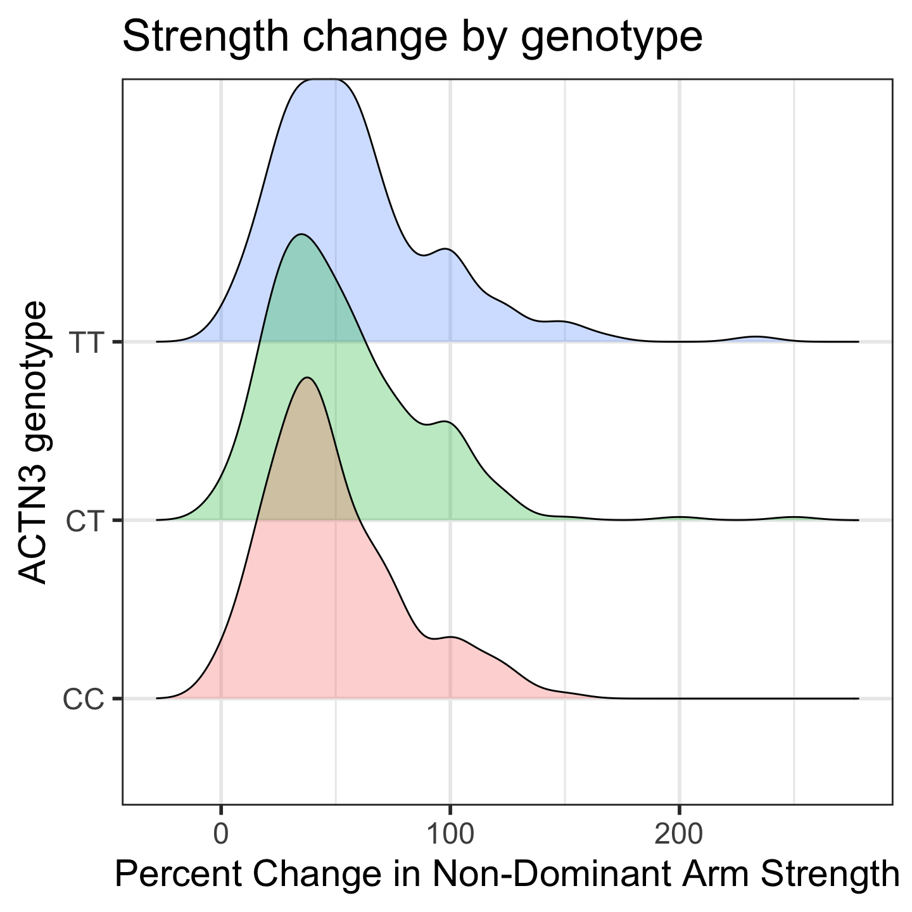
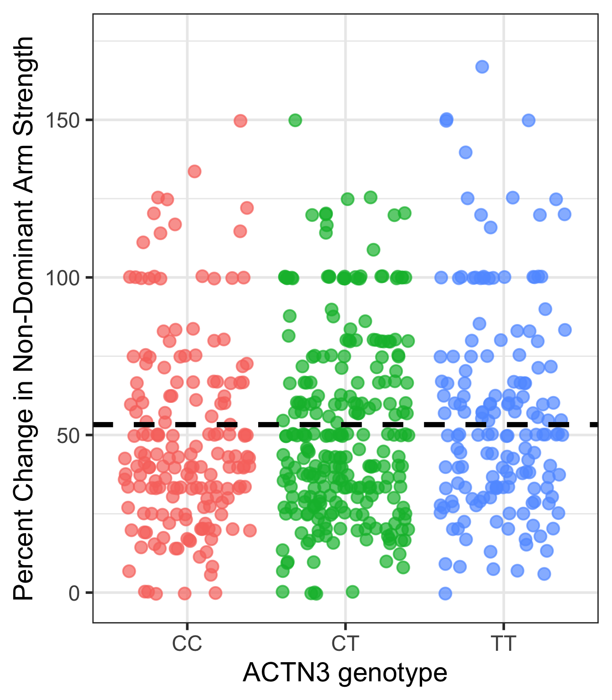
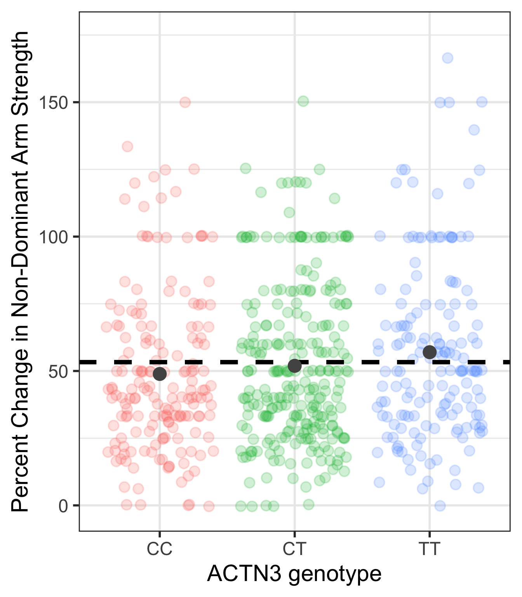
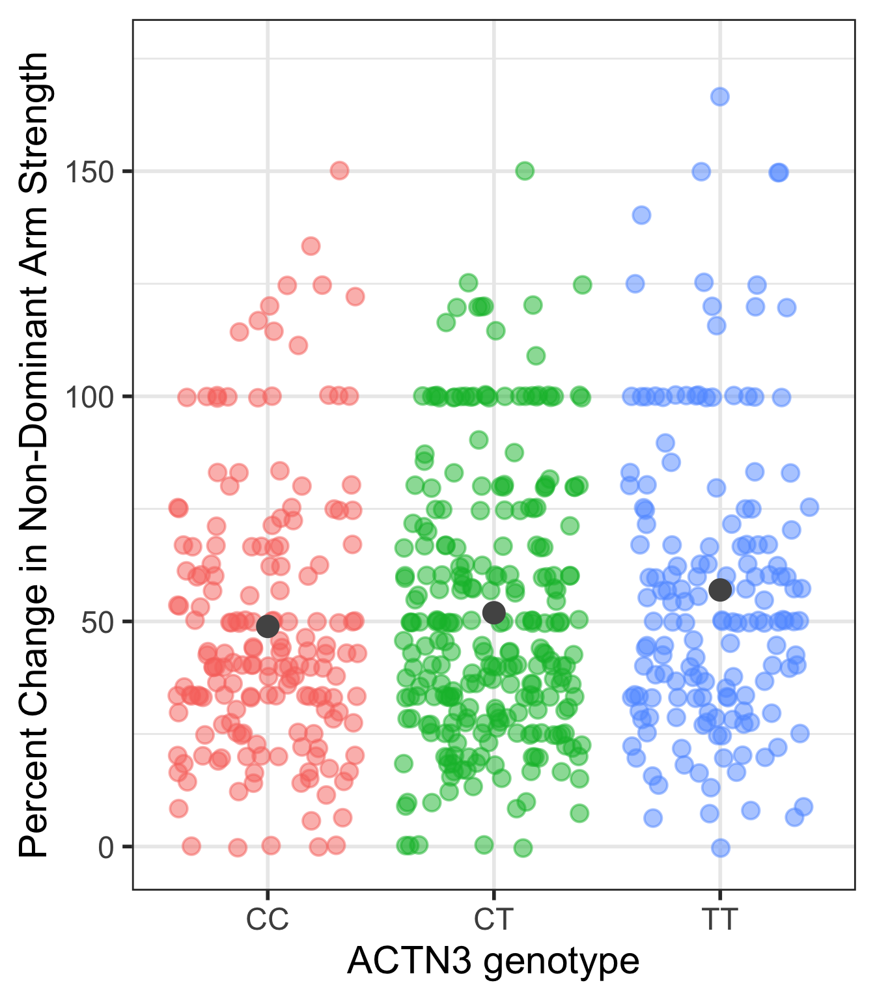
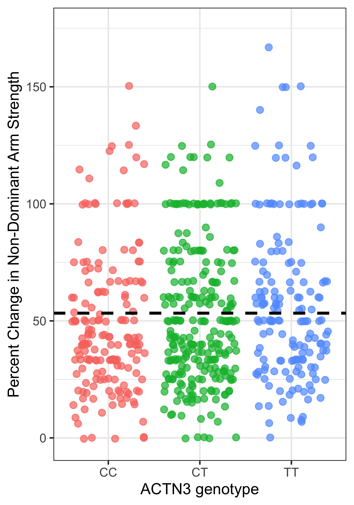
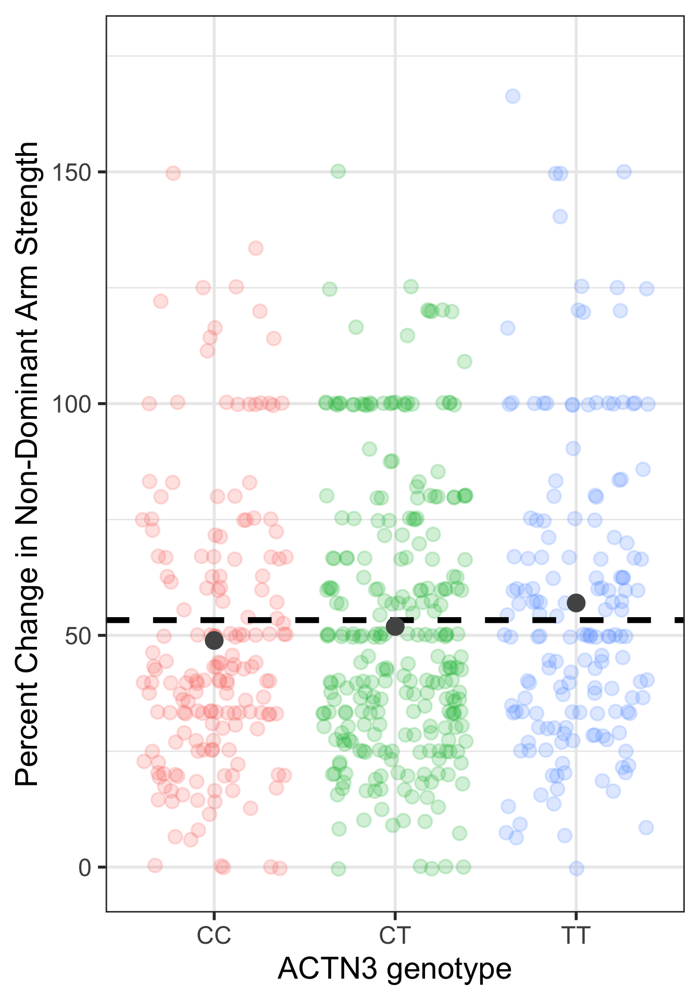
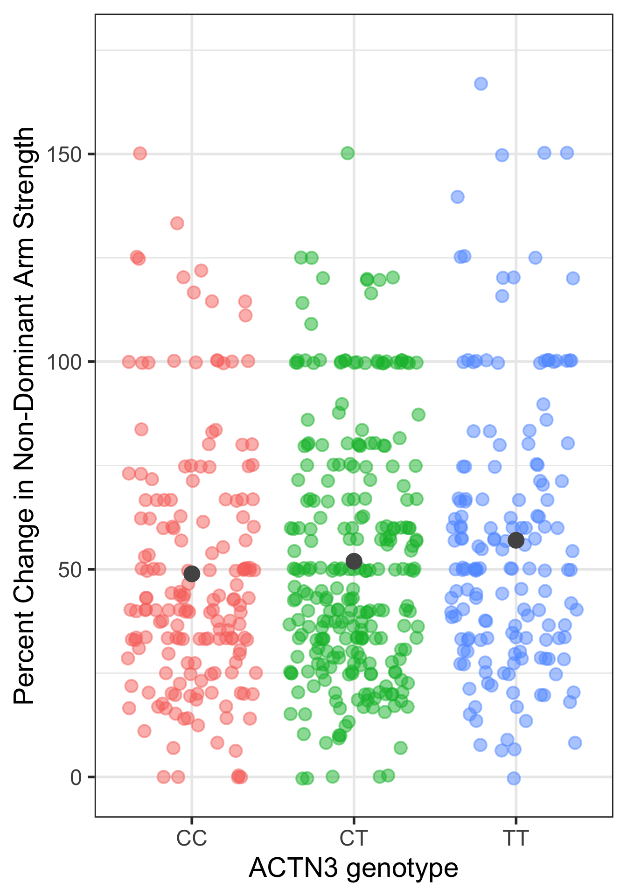
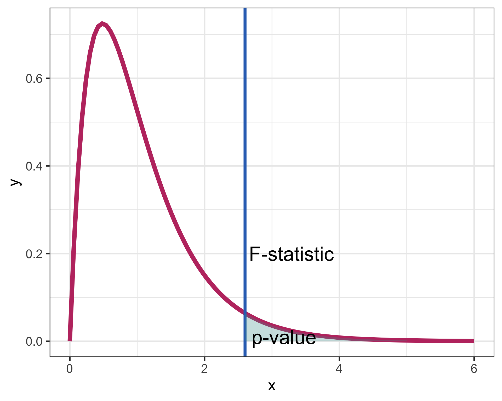

Lesson 17: Comparing Means with ANOVA
TB sections 5.5
Learning Objectives
Revisit data visualization for a numeric outcome and categorical variable (from Lesson 8).
Understand the different measures of variability within an Analysis of Variance (ANOVA) table.
Understand the F-statistic and F-distribution that is used to measure the ratio of between group and within group variability.
Determine if groups of means are different from one another using a hypothesis test and F-distribution.
Where are we?

A little while ago…
- We looked at inference for a single mean
- We looked at inference for a difference in means from two independent samples
- If there are two groups, we could see if they had different means by testing if the difference between the means were the same (null) or different (alternative)
What happens when we want to compare two or more groups’ means?
- Can no longer rely on the difference in means
- Need a new method to make inference (ANOVA or Linear Regression!)
Learning Objectives
- Revisit data visualization for a numeric outcome and categorical variable (from Lesson 8).
Understand the different measures of variability within an Analysis of Variance (ANOVA) table.
Understand the F-statistic and F-distribution that is used to measure the ratio of between group and within group variability.
Determine if groups of means are different from one another using a hypothesis test and F-distribution.
From Lesson 8: Data visualization
- Study investigating whether ACTN3 genotype at a particular location (residue 577) is associated with change in muscle function
- Categorical variable: genotypes (CC, TT, CT)
- Numeric variable: Muscle function, measured as percent change in non-dominant arm strength
- We can start the investigation by plotting the relationship
From Lesson 8: Side-by-side boxplots with data points
- We can look at the boxplot of percent change for each genotype with points shown so we can see the distribution of observations better
From Lesson 8: Ridgeline plot
- Overlapped densities were easy enough to see with 3 genotypes
- If you have many categories, a ridgeline plot might make it easier to see
Picking joint bandwidth of 9.36
Poll Everywhere Question 1
Learning Objectives
- Revisit data visualization for a numeric outcome and categorical variable (from Lesson 8).
- Understand the different measures of variability within an Analysis of Variance (ANOVA) table.
Understand the F-statistic and F-distribution that is used to measure the ratio of between group and within group variability.
Determine if groups of means are different from one another using a hypothesis test and F-distribution.
Comparing means
Whether or not two means are significantly different depends on:
- How far apart the means are
- How much variability there is within each group
Questions:
- How to measure variability between groups?
- How to measure variability within groups?
- How to compare the two measures of variability?
- How to determine significance?

Generic ANOVA table

ANOVA: Analysis of Variance
ANOVA compares the variability between groups to the variability within groups

Warning: Using `size` aesthetic for lines was deprecated in ggplot2 3.4.0.
ℹ Please use `linewidth` instead.Warning: Removed 3 rows containing missing values or values outside the scale range
(`geom_point()`).
Warning: Removed 3 rows containing non-finite outside the scale range
(`stat_summary()`).Warning: Removed 3 rows containing missing values or values outside the scale range
(`geom_point()`).
Warning: Removed 3 rows containing non-finite outside the scale range
(`stat_summary()`).Warning: Removed 3 rows containing missing values or values outside the scale range
(`geom_point()`).
ANOVA: Analysis of Variance
Analysis of Variance (ANOVA) compares the variability between groups to the variability within groups
\[\sum_{i = 1}^k \sum_{j = 1}^{n_i}(x_{ij} -\bar{x})^2 \ \ = \ \sum_{i = 1}^k n_i(\bar{x}_{i}-\bar{x})^2 \ \ + \ \ \sum_{i = 1}^k\sum_{j = 1}^{n_i}(x_{ij}-\bar{x}_{i})^2\]

Notation
- k groups
- \(n_i\) observations in each of the k groups
- Total sample size is \(N=\sum_{i=1}^{k}n_i\)
- \(\bar{x}_{i}\) = mean of observations in group i
- \(\bar{x}\) = mean of all observations
- \(s_{i}\) = sd of observations in group i
- \(s\) = sd of all observations
| Observation | i = 1 | i = 2 | i = 3 | \(\ldots\) | i = k | overall |
|---|---|---|---|---|---|---|
| j = 1 | \(x_{11}\) | \(x_{21}\) | \(x_{31}\) | \(\ldots\) | \(x_{k1}\) | |
| j = 2 | \(x_{12}\) | \(x_{22}\) | \(x_{32}\) | \(\ldots\) | \(x_{k2}\) | |
| j = 3 | \(x_{13}\) | \(x_{23}\) | \(x_{33}\) | \(\ldots\) | \(x_{k3}\) | |
| j = 4 | \(x_{14}\) | \(x_{24}\) | \(x_{34}\) | \(\ldots\) | \(x_{k4}\) | |
| \(\vdots\) | \(\vdots\) | \(\vdots\) | \(\vdots\) | \(\ddots\) | \(\vdots\) | |
| j = \(n_i\) | \(x_{1n_1}\) | \(x_{2n_2}\) | \(x_{3n_3}\) | \(\ldots\) | \(x_{kn_k}\) | |
| Means | \(\bar{x}_{1}\) | \(\bar{x}_{2}\) | \(\bar{x}_{3}\) | \(\ldots\) | \(\bar{x}_{k}\) | \(\bar{x}\) |
| Variance | \({s}^2_{1}\) | \({s}^2_{2}\) | \({s}^2_{3}\) | \(\ldots\) | \({s}^2_{k}\) | \({s}^2\) |
Total Sums of Squares (SST)
Warning: Removed 3 rows containing missing values or values outside the scale range
(`geom_point()`).
Total Sums of Squares:
\[SST = \sum_{i = 1}^k \sum_{j = 1}^{n_i}(x_{ij} -\bar{x})^2 = (N-1)s^2\]
where
- \(N=\sum_{i=1}^{k}n_i\) is the total sample size and
- \(s^2\) is the grand standard deviation of all the observations
This is the sum of the squared differences between each observed \(x_{ij}\) value and the grand mean, \(\bar{x}\).
That is, it is the total deviation of the \(x_{ij}\)’s from the grand mean.
Sums of Squares due to Groups (SSG)
Warning: Removed 3 rows containing non-finite outside the scale range
(`stat_summary()`).Warning: Removed 3 rows containing missing values or values outside the scale range
(`geom_point()`).
Sums of Squares due to Groups:
\[SSG = \sum_{i = 1}^k n_i(\bar{x}_{i}-\bar{x})^2\]
This is the sum of the squared differences between each group mean, \(\bar{x}_{i}\), and the grand mean, \(\bar{x}\).
That is, it is the deviation of the group means from the grand mean.
Also called the Model SS, or \(SS_{model}.\)
Sums of Squares Error (SSE)
Warning: Removed 3 rows containing non-finite outside the scale range
(`stat_summary()`).Warning: Removed 3 rows containing missing values or values outside the scale range
(`geom_point()`).
Sums of Squares Error:
\[SSE = \sum_{i = 1}^k\sum_{j = 1}^{n_i}(x_{ij}-\bar{x}_{i})^2 = \sum_{i = 1}^k(n_i-1)s_{i}^2\] where \(s_{i}\) is the standard deviation of the \(i^{th}\) group
This is the sum of the squared differences between each observed \(x_{ij}\) value and its group mean \(\bar{x}_{i}\).
That is, it is the deviation of the \(x_{ij}\)’s from the predicted ndrm.ch by group.
Also called the residual sums of squares, or \(SS_{residual}.\)
Poll Everywhere Question 2
ANOVA table to hypothesis test?
- Okay, so how do we use all these types of variability to run a test?
- How do we determine, statistically, if the groups have different means or not?
- Answer: We use the F-statistic in a hypothesis test!
Learning Objectives
Revisit data visualization for a numeric outcome and categorical variable (from Lesson 8).
Understand the different measures of variability within an Analysis of Variance (ANOVA) table.
- Understand the F-statistic and F-distribution that is used to measure the ratio of between group and within group variability.
- Determine if groups of means are different from one another using a hypothesis test and F-distribution.
Thinking about the F-statistic
If the groups are actually different, then which of these is more accurate?
- The variability between groups should be higher than the variability within groups
- The variability within groups should be higher than the variability between groups
If there really is a difference between the groups, we would expect the F-statistic to be which of these:
- Higher than we would observe by random chance
- Lower than we would observe by random chance

The F-statistic
- F-statistic represents the standardized ratio of variability between groups to the variability within the groups
\[F_{stat} = \dfrac{MSG}{MSE}\]
- F is larger when the variability between groups is larger than variability within groups
The F-distribution
- The F-distribution is skewed right
- The F-distribution has two different degrees of freedom:
- one for the numerator of the ratio (k – 1) and
- one for the denominator (N – k)
- \(p\)-value
- \(P(F > F_{stat})\)
- is always the upper tail
- (the area as extreme or more extreme)

Poll Everywhere Question 3
Learning Objectives
Revisit data visualization for a numeric outcome and categorical variable (from Lesson 8).
Understand the different measures of variability within an Analysis of Variance (ANOVA) table.
Understand the F-statistic and F-distribution that is used to measure the ratio of between group and within group variability.
- Determine if groups of means are different from one another using a hypothesis test and F-distribution.
Reference: Steps in a Hypothesis Test
Check the assumptions
Set the level of significance \(\alpha\)
Specify the null ( \(H_0\) ) and alternative ( \(H_A\) ) hypotheses
- In symbols
- In words
Alternative: one- or two-sided?
Calculate the test statistic.
Calculate the p-value based on the observed test statistic and its sampling distribution
Write a conclusion to the hypothesis test
- Do we reject or fail to reject \(H_0\)?
- Write a conclusion in the context of the problem
Step 1: Check assumptions
The sampling distribution is an F-distribution, if…
- Sample sizes in each group group are large (each \(n \ge 30\))
- OR the data are relatively normally distributed in each group
- Variability is “similar” in all group groups:
- Is the within group variability about the same for each group?
- As a rough rule of thumb, this condition is violated if the standard deviation of one group is more than double the standard deviation of another group
Step 1: Check assumptions
- Use R to check both assumptions in our example
genotype_groups <- famuss %>%
group_by(actn3.r577x) %>%
summarise(count = n(),
SD = sd(ndrm.ch))
genotype_groups# A tibble: 3 × 3
actn3.r577x count SD
<fct> <int> <dbl>
1 CC 173 30.0
2 CT 261 33.2
3 TT 161 35.7- Counts in each group are greater than 30!
max(genotype_groups$SD) / min(genotype_groups$SD)[1] 1.191455- Variability in one group vs. another is no more than 1.2 times!
Step 3: Specify Hypotheses
General hypotheses
To test for a difference in means across k groups:
\[\begin{align} H_0 &: \mu_1 = \mu_2 = ... = \mu_k\\ \text{vs. } H_A&: \text{At least one pair } \mu_i \neq \mu_j \text{ for } i \neq j \end{align}\]
Hypotheses test for example
\[\begin{align} H_0 &: \mu_{CC} = \mu_{CT} = \mu_{TT}\\ \text{vs. } H_A&: \text{At least one pair } \mu_i \neq \mu_j \text{ for } i \neq j \end{align}\]
Step 4-5: Find the test statistic and p-value
- Our test statistic is an F-statistic
- F-statistic: measurement of the ratio of variability between groups to variability within groups
- Our F-statistic follows an F-distribution
- Which is why we cannot use something like the Z-distribution nor T-distribution
- So we’ll need to find the F-statistic and its corresponding p-value using an F-distribution
Step 4-5: Find the test statistic and p-value
- There are several options to run an ANOVA model (aka calculate F-statistic and p-value)
- Two most common are
lmandaovlm= linear model; will be using frequently in BSTA 512
lm(ndrm.ch ~ actn3.r577x,
data = famuss) %>% anova()Analysis of Variance Table
Response: ndrm.ch
Df Sum Sq Mean Sq F value Pr(>F)
actn3.r577x 2 7043 3521.6 3.2308 0.04022 *
Residuals 592 645293 1090.0
---
Signif. codes: 0 '***' 0.001 '**' 0.01 '*' 0.05 '.' 0.1 ' ' 1aov(ndrm.ch ~ actn3.r577x,
data = famuss) %>% summary() Df Sum Sq Mean Sq F value Pr(>F)
actn3.r577x 2 7043 3522 3.231 0.0402 *
Residuals 592 645293 1090
---
Signif. codes: 0 '***' 0.001 '**' 0.01 '*' 0.05 '.' 0.1 ' ' 1Step 6: Conclusion
\[\begin{align} H_0 &: \mu_{CC} = \mu_{CT} = \mu_{TT}\\ \text{vs. } H_A&: \text{At least one pair} \mu_i \neq \mu_j \text{ for } i \neq j \end{align}\]
- Recall the \(p\)-value = 0.0402
- Use \(\alpha\) = 0.05
- Do we reject or fail to reject \(H_0\)?
Conclusion statement:
- There is sufficient evidence that at least one of the genotype groups has a change in arm strength statistically different from the other groups. ( \(p\)-value =0.0402)
Final note
Recall, visually the three looked pretty close
This is the case that I would also do some work to report the means and standard deviations of each genotype’s percent change in non-dominant arm strength.
famuss %>%
group_by(actn3.r577x) %>%
summarise(count = n(),
mean = mean(ndrm.ch),
SD = sd(ndrm.ch))# A tibble: 3 × 4
actn3.r577x count mean SD
<fct> <int> <dbl> <dbl>
1 CC 173 48.9 30.0
2 CT 261 53.2 33.2
3 TT 161 58.1 35.7Revised conclusion statement:
- For people with CC genotype then mean percent change in arm non-dominant arm strength was 48.9% (SD = 30%). For CT, mean percent change was 53.2% (SD = 33.2%). For TT, mean percent change was 58.1% (SD = 35.7%). There is sufficient evidence that at least one of the genotype groups has a change in arm strength statistically different from the other groups. ( \(p\)-value =0.0402)